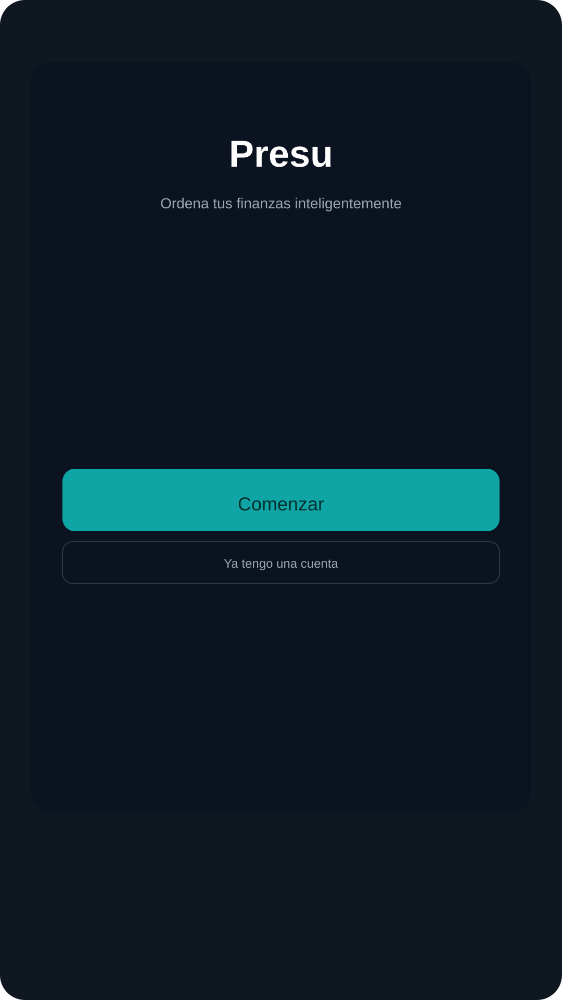
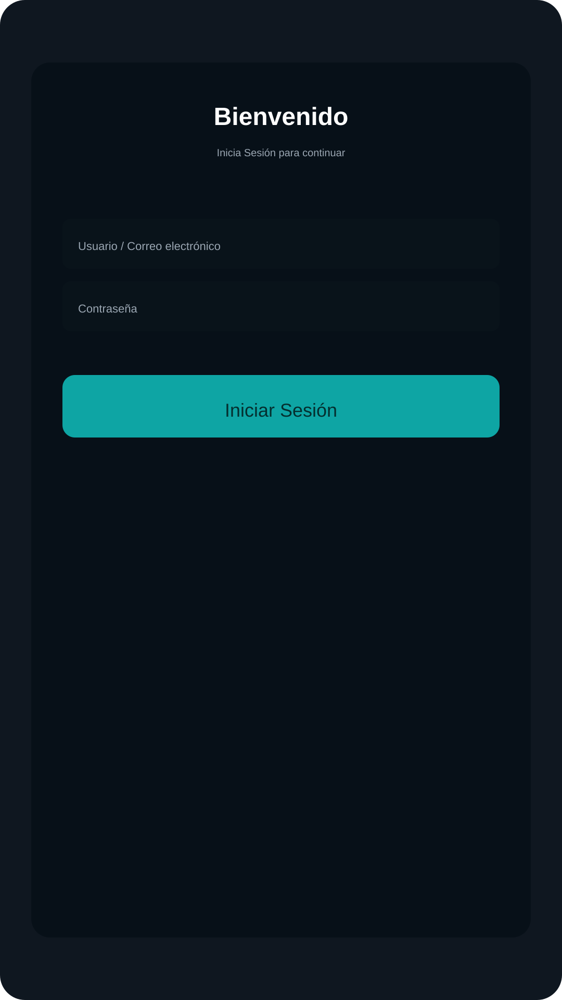
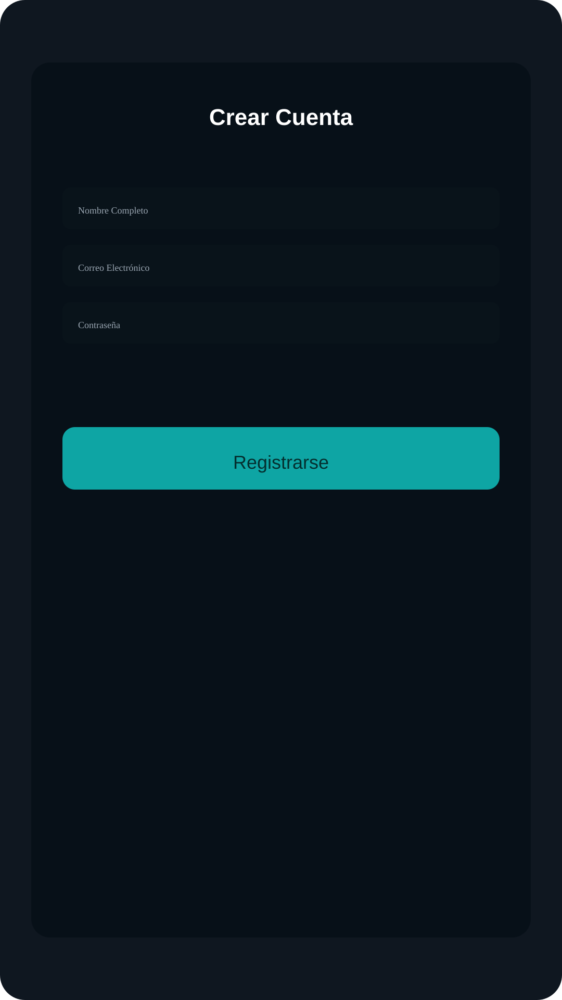
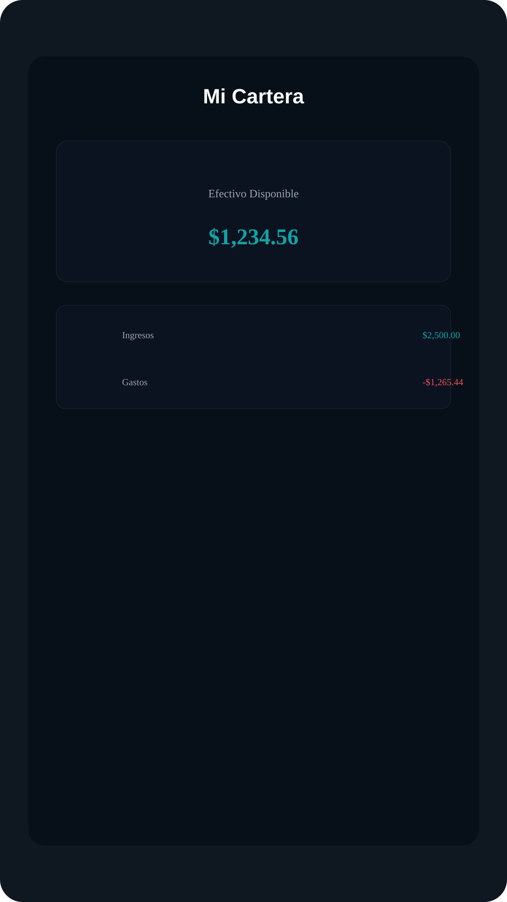

Presu — Descripción del Proyecto
Resumen ejecutivo
Presu es una aplicación móvil (Expo / React Native) para gestión personal
de finanzas que ayuda a los usuarios a ordenar sus ingresos, gastos y
presupuestos. Ofrece autenticación con Supabase, registro y recuperación
de contraseña, gestión de transacciones, visualizaciones de flujo y un
panel de cartera.
Propósito y público objetivo
-
Propósito: Facilitar la organización y seguimiento del
flujo de caja personal y el control de presupuestos mensuales.
-
Público objetivo: Usuarios jóvenes-adultos y
profesionales; pequeñas PYMEs.
Funcionalidades principales
- Registro e inicio de sesión con Supabase Auth.
- Recuperación de contraseña mediante enlace y tokens.
- CRUD de transacciones.
-
Visualización de cartera: balance, ingresos vs gastos y flujo mensual.
- Gestión de presupuestos por categoría.
- Soporte multiplataforma (iOS/Android/web).
Arquitectura y diseño técnico
Framework: Expo + React Native con TypeScript. Enrutamiento con
expo-router. Backend: Supabase (Auth + Postgres). Cliente
Supabase en services/supabase.ts y API en
services/api.ts.
Modelo de datos (resumen)
-
transactions: id, user_id, title, amount, type, icon,
date, created_at
- budgets: id, user_id, category_id, amount
Stack tecnológico
React, React Native, Expo, TypeScript, Supabase, AsyncStorage,
react-native-gifted-charts, etc.
Variables de entorno
- EXPO_PUBLIC_SUPABASE_URL
- EXPO_PUBLIC_SUPABASE_ANON_KEY
Cómo ejecutar localmente (demo rápido)
- Clonar repo.
- Instalar dependencias:
npm install.
- Añadir variables de entorno.
- Ejecutar:
npx expo start.
Puntos de venta y discurso comercial
Problema: falta de visibilidad del flujo de caja. Solución: interfaz
simple y visualizaciones claras. Monetización: freemium, suscripciones,
B2B/white-label.
Guión recomendado para la presentación (diapositivas)
- Título y tagline
- Problema
- Solución
- Demo UI
- Tecnologías
- Seguridad
- Mercado
- Roadmap
- Equipo
- Petición/CTA
Recursos y archivos importantes
- app/ — Pantallas y rutas.
- components/ — Componentes UI.
- services/ — `supabase.ts`, `api.ts`.
Capturas de pantalla (simuladas)
Se incluyen capturas SVG que representan las pantallas clave. Estas
imágenes están en docs/screenshots.
-

-

-

-

-- Documento generado automáticamente. Abra este archivo en Microsoft Word
y guárdelo como .docx si necesita un formato Word nativo.